- Objective
- Installing and Configuring the SQL Database
- Creating and Configuring Our Web App
- Port Forwarding the Website to the NAT Network
Table of Contents
Objective
The goal of this document is to detail the configuration of a vulnerable IIS web server. The website will be vulnerable to SQL injection which will lead to remote command execution. This configuration will be used in the simulated exploitation of attack chain #2.
Installing and Configuring the SQL Database
We download SQL Server Express 2019 from the Microsoft website and launch the installer. We choose Basic as the installation type. Every other setting of the installation is left untouched.
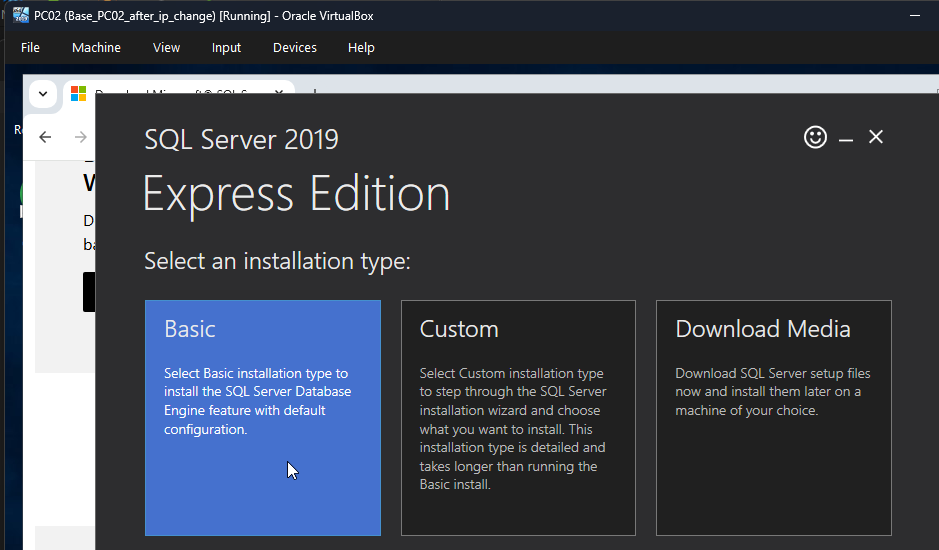Once the installation is completed, we download SQL Server Management Studio from the Microsoft website and launch the installer.
We install the SSMS Core Components.
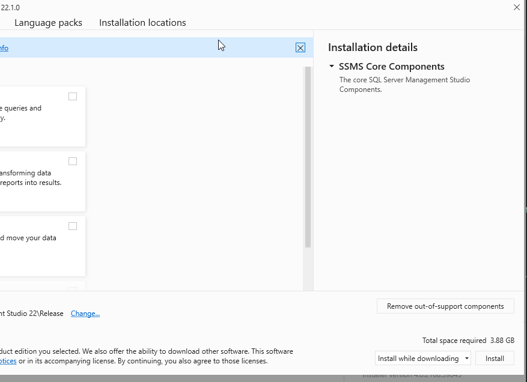We restart the machine once the installation is complete.
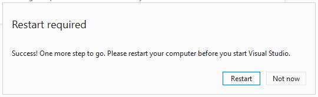We launch SQL Server Configuration Manager and enable TCP/IP.
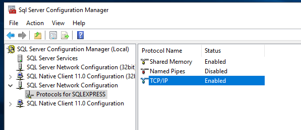We right-click "TCP/IP", select "Properties", and set the TCP Port in IPALL to 1433.
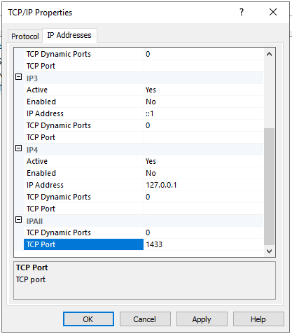We then open SSMS and connect to localhost\SQLEXPRESS. We select "Trust Server Certificate" to ensure a successful connection.
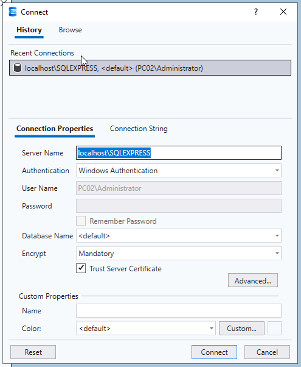We then create a new database that will be used in our tests.
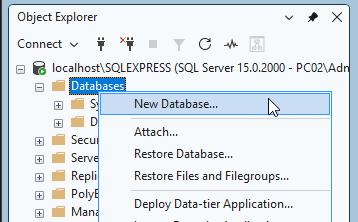We name it "vulnDB" and click OK.
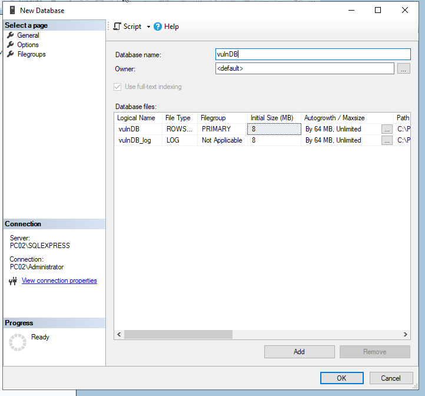We also add a new user to the database. This user's permissions can be modified in the future depending on our needs. For now, we will be assigning the sysadmin role.
In the object explorer, we right-click on "Logins" and click "New Login".
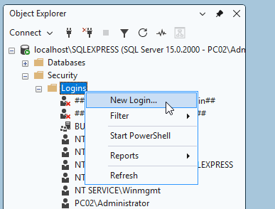We name the user "user1" and uncheck "enforce password policy".
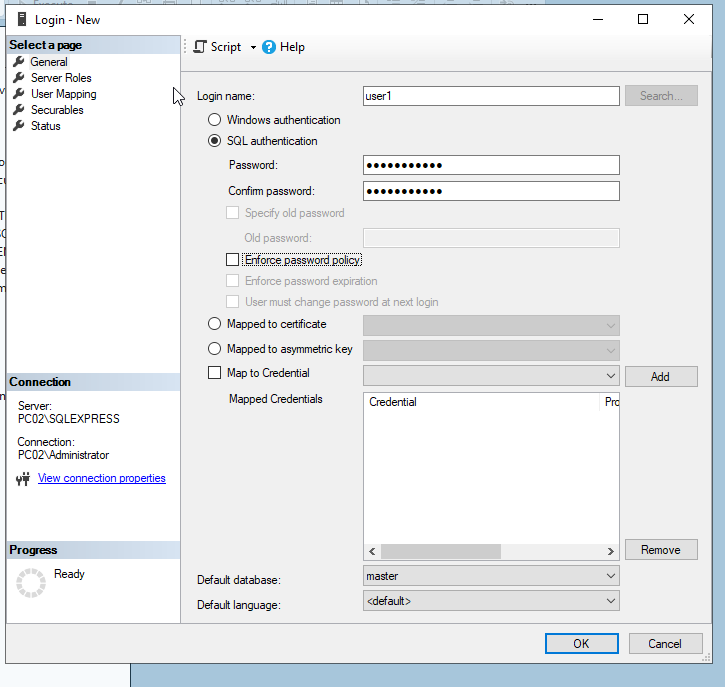We now allow our user to log in to the database by adding him to the vulnDB database users.
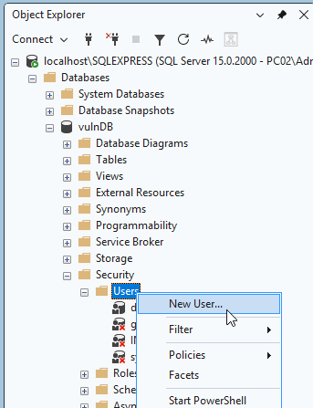
We assign the sysadmin role to the user with a new query:
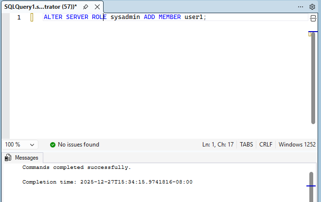We create a table in our database.
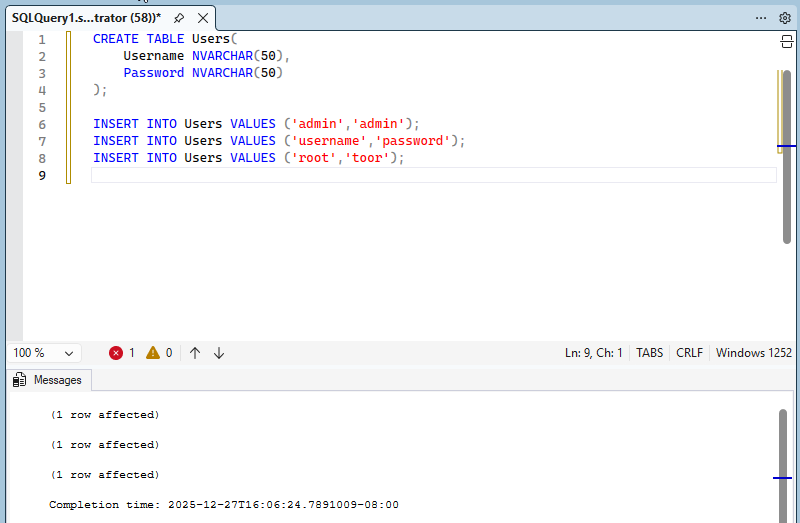Finally, we enable xp_cmdshell globally. This will allow us to execute OS commands once SQLi is achieved.
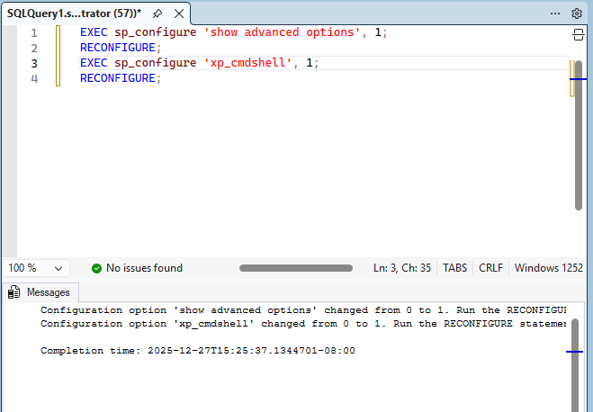Creating and Configuring Our Web App
We open IIS Manager and add a new application to our default website.
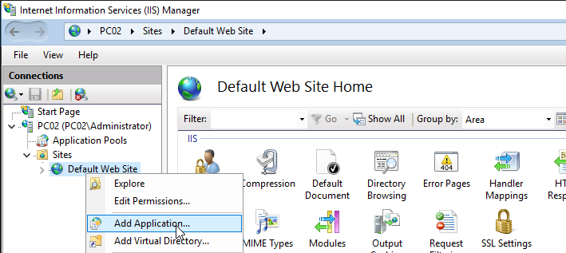We set the alias to "login" and the physical path to "C:\inetpub\wwwroot\login".
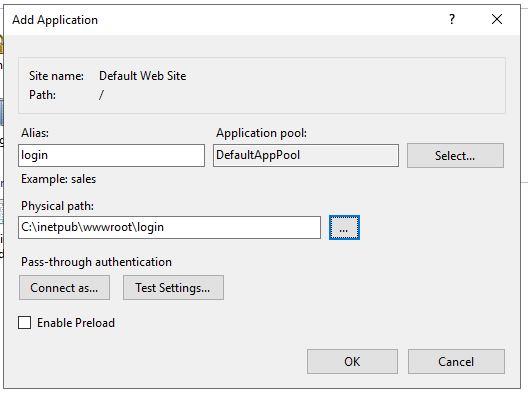We open Server Manager and select the "Application Development" component of the Web Server IIS role. We then select both .NET Extensibility options, ASP.NET 4.7, ISAPI Extensions and ISAPI filters. We click Next, Next, then Install.
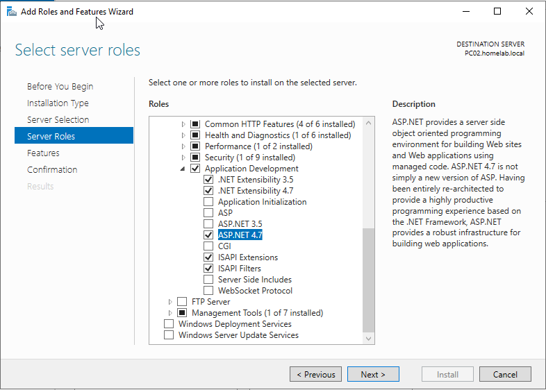We restart the machine.
We create "web.config" in "C:\inetpub\wwwroot\login" and add the following code:
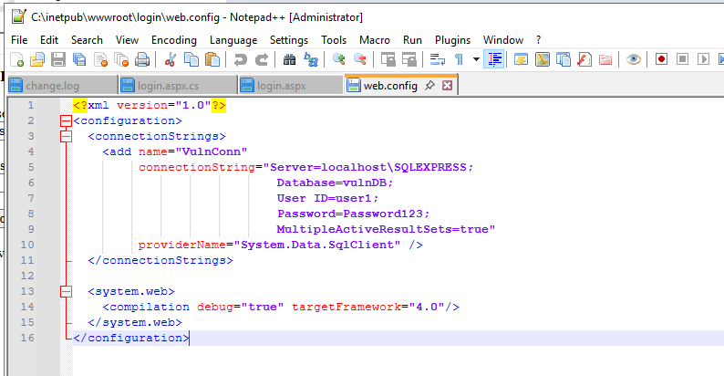This will be our connection file for the SQL database.
We then create login.aspx in the same directory and add the following code:
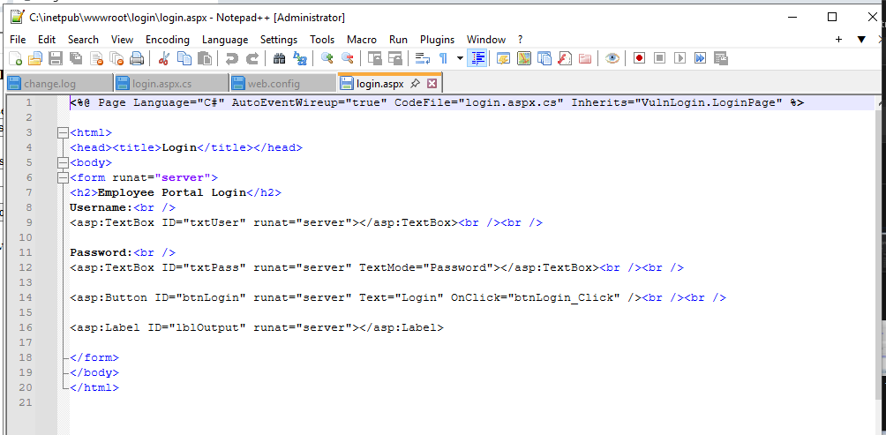Finally, we create login.aspx.cs in the same directory with this code:
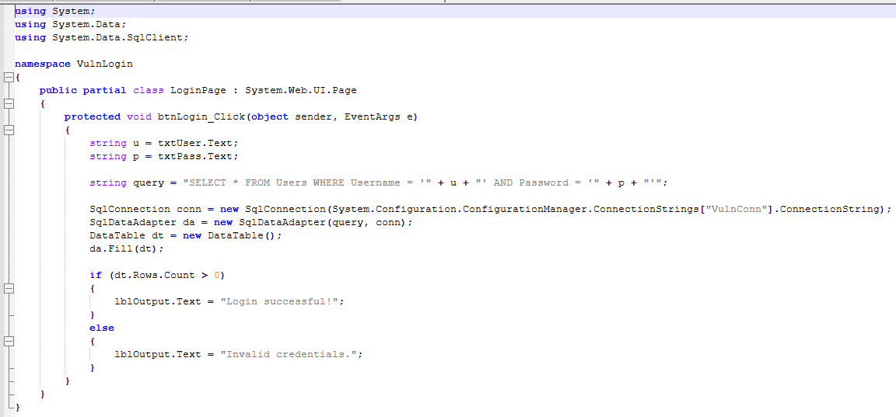The vulnerable query is "SELECT * FROM Users WHERE Username = '" + u + "' AND Password = '" + p + "'";
We can now visit the website at http://localhost/login/login.aspx to test it.

We see that it loads correctly.
When we try to log in, we see that the connection to the database is failing.
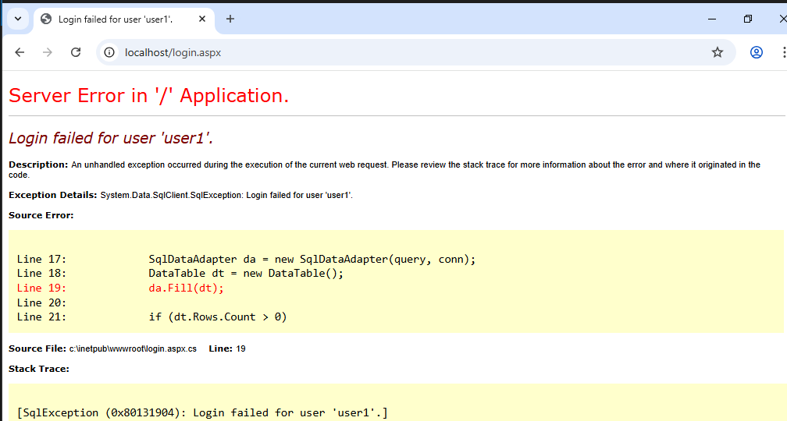We fix this by enabling "SQL Server and Windows Authentication mode" in the security tab of the server properties and restarting the SQL Server.
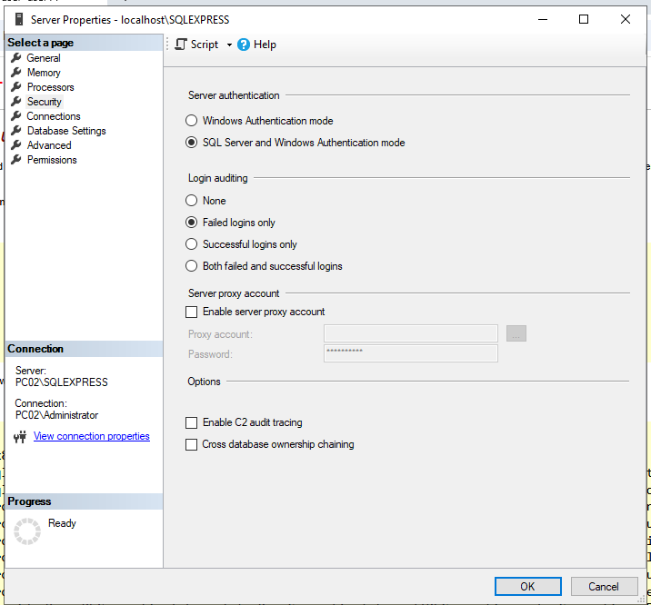We now test a successful and failed login on our web page.
We get a successful login with "root" as the username and "toor" as the password:

We get a failed login with "root" as the username and "test" as the password:
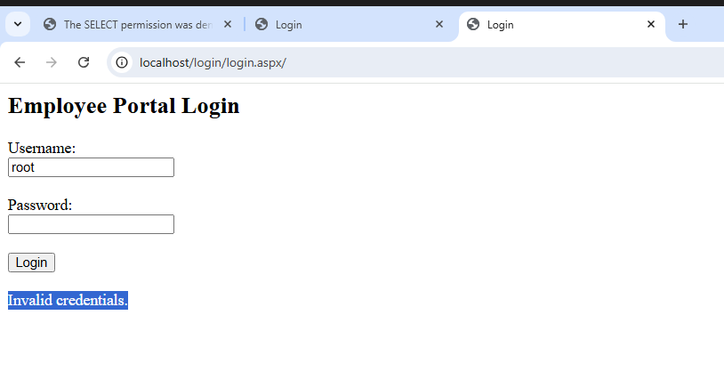Now that we know the web app is validating our requests, we test a simple SQL injection to see if we get a successful login response.
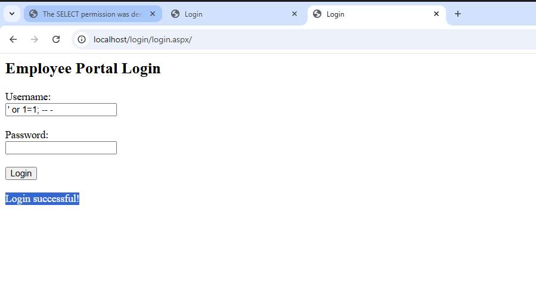It works. We will now test whether we can execute commands with xp_cmdshell. The payload used for the test is the following: '; exec xp_cmdshell 'mkdir C:\test6';--
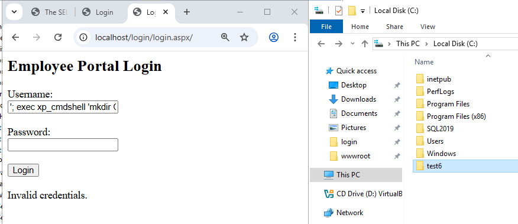We see that the folder is created. We now have the web server configured and vulnerable to SQLi.
Port Forwarding the Website to the NAT Network
We create a NAT network by heading to the Network section of the VirtualBox Manager and click "Create".
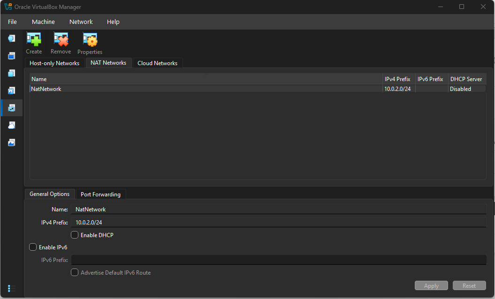We make sure that the network interfaces of both the Kali machine and the pfSense machine are set to NatNetwork.
We will now port forward the website to the WAN. The goal of doing so is to simulate an externally-facing web page that we can access from our Kali attack machine. We log into the pfSense interface and head to the firewall settings to add an entry.


After saving this rule, I could not access the website from my Kali machine. It seems that the firewall rule created automatically in conjunction with the port-forwarding rule was not accepting the connection. I went back to the port-forwarding settings and set "Filter rule association" to "Pass". This fixed my issue and we could access the internal website from Kali.
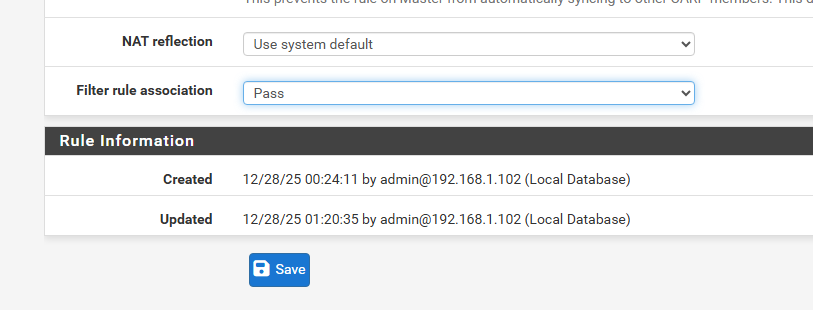We test connecting to the website on PC02 from our Kali machine and see that it works.
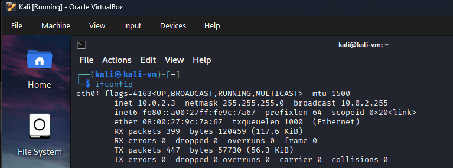 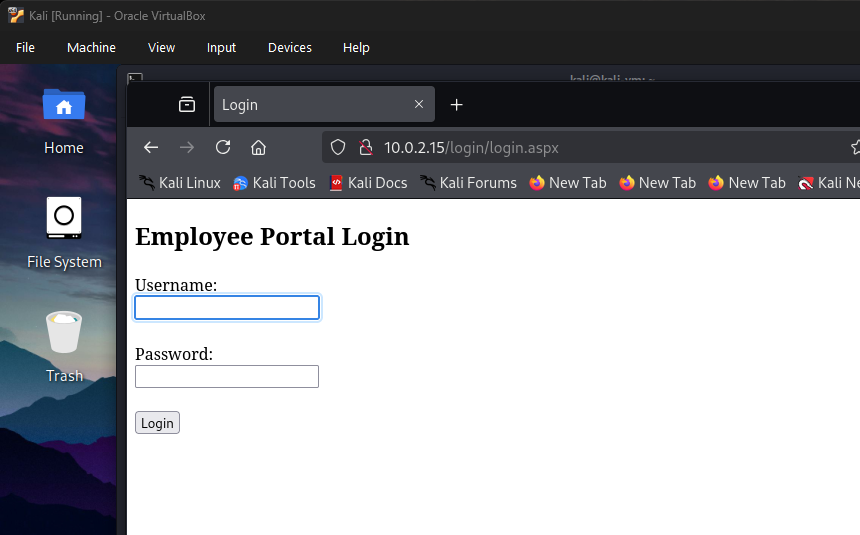We successfully configured a vulnerable external web page hosted on our internal network.